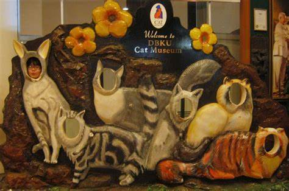

Kuching Cat Museum
Tour Detail
Bangunan DBKU, Jalan Semariang 93050 Kuching Sarawak
09:00a.m -05:00p.m
09:00a.m -05:00p.m
Description
The Kuching Cat Museum is a unique and quirky museum located in Kuching, the capital city of Sarawak, Malaysia. As the name suggests, it is dedicated to all things feline, making it a must-visit destination for cat lovers and enthusiasts.The museum is situated within the Kuching North City Hall building, which is located on a hill overlooking the city. It houses an extensive collection of cat-related artifacts, exhibits, and memorabilia, showcasing the cultural significance of cats in various societies and traditions around the world.
Visitors to the Kuching Cat Museum can explore a wide range of displays and exhibits, including:
1. Cat History: Learn about the history of cats and their domestication, as well as their roles in different cultures and civilizations throughout history.
2. Cat Artifacts: View a diverse array of cat-themed artifacts, including sculptures, paintings, ceramics, textiles, and decorative items from different countries and time periods.
3. Cat Memorabilia: Discover an eclectic collection of cat-themed memorabilia, including toys, figurines, stamps, coins, postcards, and other collectibles from around the world.
4. Cat Breeds: Learn about different cat breeds and their characteristics through informative displays and exhibits.
5. Cat Legends and Folklore: Explore myths, legends, and folklore surrounding cats in various cultures and traditions.
6. Cat Celebrities: Discover famous cats from history, literature, film, and popular culture, as well as their impact on society.
The Kuching Cat Museum also features interactive exhibits, educational programs, and special events throughout the year, making it an engaging and entertaining destination for visitors of all ages.
Gallery
